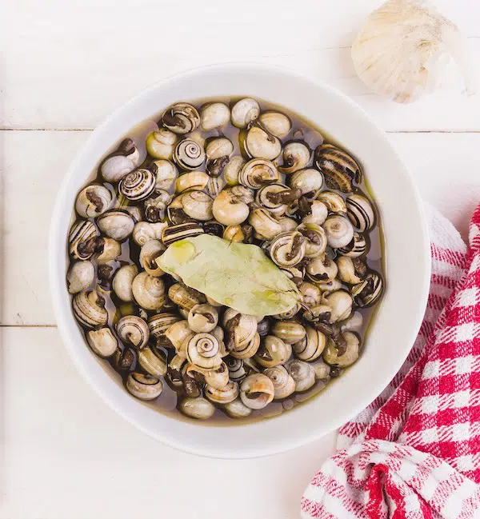

Segundo Plato
Caracoles en salsa
Indice
Ingredientes para 4 personas
- 1.500 kg de caracoles ya limpios y precocidos
- 2 cebollas medianas
- 4 dientes de ajo
- 400 g de tomate triturado
- 2 hojas de laurel
- 4-5 hojas de hierbabuena
- 1 cucharada de pimentón
- 500 ml de caldo de carne o de ave
- 150 ml de vino blanco
- aceite de oliva virgen extra
- sal
Paso a paso
- Cortamos la cebolla en juliana fina.
- En una cacerola grande ponemos un buen chorreón de aceite y cuando esté caliente, echamos la cebolla.
- Echamos un poco de sal y sofreímos hasta que la cebolla empiece a ponerse transparente.
- Añadimos los ajos sin pelar, solo con un corte en el medio, y las guindillas (si no te gusta muy picante puedes poner menos o incluso no ponerlas).
- Añadimos también el laurel y la hierbabuena, removemos y dejamos sofreír 2 o 3 minutos.
- Echamos el pimentón, removemos, sofreímos unos segundos y añadimos el tomate triturado.
- Removemos, dejamos sofreír 5 minutos y echamos el vino blanco.
- Dejamos evaporar el alcohol (2 o 3 minutos). Ahora agregamos los caracoles bien escurridos.
- Cubrimos con el caldo de carne o ave y dejamos cocinar a fuego medio con la cazuela tapada, removiendo de vez en cuando, por unos 40 minutos, o hasta que al probar un caracol esté tierno.
Resultado final
